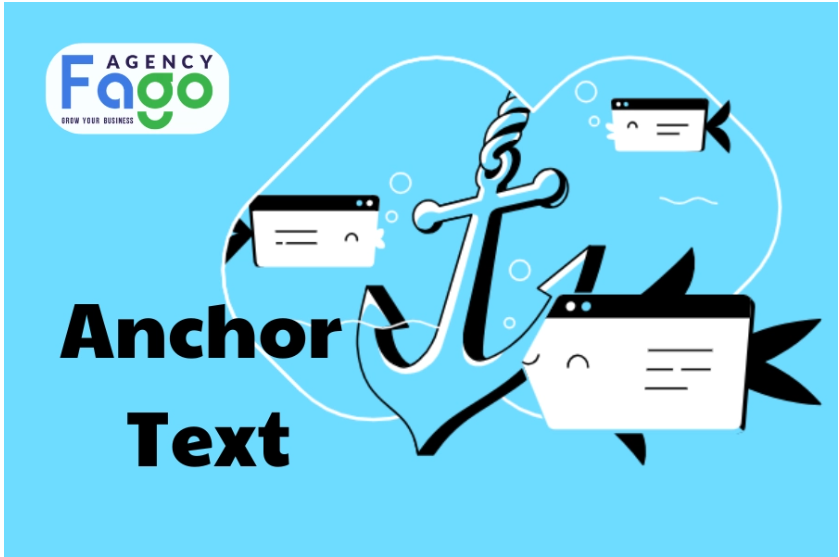

Anchor Text Là Gì? Cách Tạo Và Sử Dụng Anchor Text Hiệu Quả
Khám phá Content Angle là gì? Tìm hiểu định nghĩa, vai trò và cách ứng dụng Content Angle hiệu quả trong chiến lược content marketing. Tìm hiểu ngay!
📘 Nội dung bài viết:
Trong thế giới SEO (Search Engine Optimization), có rất nhiều yếu tố ảnh hưởng đến thứ hạng của một website trên các công cụ tìm kiếm. Một trong những yếu tố quan trọng nhưng thường bị bỏ qua chính là Anchor Text. Vậy Anchor Text là gì và tại sao nó lại đóng vai trò quan trọng trong việc cải thiện hiệu quả SEO của website? Trong bài viết này, Fago Agency sẽ cùng bạn khám phá chi tiết về Anchor Text, từ định nghĩa, cấu tạo, cách sử dụng hiệu quả đến những sai lầm cần tránh.
1. Anchor Text là gì?
Khái niệm về Anchor Text: Anchor Text là một thuật ngữ quan trọng trong lĩnh vực SEO và thiết kế website. Đơn giản mà nói, Anchor Text là phần văn bản có thể nhấp được trong một liên kết. Thông thường, nó được hiển thị bằng màu xanh và được gạch chân, giúp người dùng nhận biết rằng họ có thể nhấp vào để truy cập một trang khác. Ví dụ: Khi bạn thấy dòng chữ "Tìm hiểu thêm về Anchor Text trong SEO", cụm từ Anchor Text chính là một Anchor Text.
Vai trò của Anchor Text: không chỉ dừng lại ở việc kết nối các trang web với nhau mà còn là một yếu tố quan trọng giúp các công cụ tìm kiếm như Google hiểu rõ hơn về nội dung của trang đích. Khi bạn sử dụng Anchor Text đúng cách, nó sẽ giúp cải thiện thứ hạng tìm kiếm của trang web, đồng thời mang lại trải nghiệm tốt hơn cho người dùng. Ví dụ, nếu bạn có một bài viết về "Cách tối ưu hóa SEO cho website" và bạn sử dụng Anchor Text "tối ưu hóa SEO" để liên kết đến một bài viết chi tiết hơn về chủ đề này, Google sẽ hiểu rằng nội dung của trang đích liên quan đến tối ưu hóa SEO. Điều này giúp tăng khả năng xếp hạng cho cả hai trang.
2. Cấu tạo của một Anchor Text
Để hiểu rõ hơn về Anchor Text, chúng ta cần phân tích cấu tạo và các loại phổ biến của nó.
Các thành phần chính của Anchor Text:
- Từ khóa: Là nội dung văn bản mà người dùng nhìn thấy và nhấp vào. Đây có thể là từ khóa chính, từ khóa liên quan hoặc bất kỳ cụm từ nào phù hợp với nội dung trang đích.
- URL: Là địa chỉ trang web mà Anchor Text liên kết đến. URL này có thể là một trang nội bộ trong website hoặc một trang bên ngoài.
Phân loại Anchor Text:
- Anchor Text chính xác:
Là loại Anchor Text trùng khớp hoàn toàn với từ khóa mục tiêu. Ví dụ: Nếu từ khóa mục tiêu của bạn là "dịch vụ SEO", thì Anchor Text cũng sẽ là "dịch vụ SEO".
- Ưu điểm: Giúp công cụ tìm kiếm nhận diện rõ ràng nội dung của trang đích.
- Nhược điểm: Nếu lạm dụng, có thể bị Google đánh giá là spam.
- Anchor Text liên quan:
Là loại Anchor Text có nội dung liên quan đến chủ đề của trang đích nhưng không trùng khớp hoàn toàn với từ khóa mục tiêu. Ví dụ: "tăng thứ hạng tìm kiếm" có thể là Anchor Text liên quan đến từ khóa "SEO".
- Ưu điểm: Tự nhiên hơn và giảm nguy cơ bị Google phạt.
- Nhược điểm: Hiệu quả SEO có thể không cao bằng Anchor Text chính xác.
- Anchor Text chung chung:
Là những cụm từ như "click here", "tìm hiểu thêm", "xem chi tiết". Ví dụ: "Nhấn vào đây để tìm hiểu thêm về Anchor Text".
- Ưu điểm: Thân thiện với người dùng.
- Nhược điểm: Không cung cấp thông tin cụ thể cho công cụ tìm kiếm.
- Anchor Text thương hiệu: Là loại Anchor Text sử dụng tên thương hiệu hoặc slogan. Ví dụ: "Fago Agency – Dịch vụ SEO chuyên nghiệp".
- Ưu điểm: Xây dựng nhận diện thương hiệu.
- Nhược điểm: Không tối ưu hóa từ khóa mục tiêu.
- Anchor Text naked: Là loại Anchor Text chỉ hiển thị URL mà không có nội dung văn bản.
- Ưu điểm: Thích hợp cho các liên kết tham khảo.
- Nhược điểm: Không thân thiện với người dùng và không tối ưu hóa từ khóa.
Ưu và nhược điểm của từng loại Anchor Text:
- Anchor Text chính xác: Hiệu quả SEO cao nhưng dễ bị Google phạt nếu lạm dụng.
- Anchor Text liên quan: Tự nhiên hơn nhưng cần nghiên cứu từ khóa kỹ lưỡng.
- Anchor Text chung chung: Thân thiện với người dùng nhưng không hỗ trợ nhiều cho SEO.
- Anchor Text thương hiệu: Tốt cho xây dựng thương hiệu nhưng không tối ưu hóa từ khóa.
- Anchor Text naked: Phù hợp cho liên kết ngoài nhưng không thân thiện với người dùng.

Nên sử dụng Anchor Text
Việc lựa chọn loại Anchor Text phụ thuộc vào mục tiêu của bạn. Để đạt hiệu quả tốt nhất, bạn nên kết hợp đa dạng các loại Anchor Text, đảm bảo tự nhiên và phù hợp với nội dung trang đích. Tránh lạm dụng một loại duy nhất, đặc biệt là Anchor Text chính xác, để tránh bị Google đánh giá là spam.
3. Cách xây dựng Anchor Text hiệu quả
Việc xây dựng Anchor Text hiệu quả không chỉ giúp cải thiện thứ hạng của website trên công cụ tìm kiếm mà còn nâng cao trải nghiệm người dùng. Dưới đây là những bước quan trọng mà bạn cần thực hiện để tối ưu hóa Anchor Text.
Lựa chọn từ khóa
- Nghiên cứu từ khóa kỹ lưỡng:
Trước khi tạo Anchor Text, việc nghiên cứu từ khóa là bước đầu tiên và quan trọng nhất. Bạn cần sử dụng các công cụ như Google Keyword Planner, Ahrefs hoặc SEMrush để tìm kiếm các từ khóa liên quan đến nội dung trang đích. Ví dụ, nếu bạn đang viết về "dịch vụ SEO", các từ khóa liên quan có thể là "tối ưu hóa SEO", "dịch vụ SEO chuyên nghiệp", "SEO tổng thể".
- Xác định từ khóa chính và từ khóa phụ
- Từ khóa chính: Là từ khóa mục tiêu mà bạn muốn tối ưu hóa. Ví dụ: "Anchor Text".
- Từ khóa phụ: Là các từ khóa liên quan hoặc biến thể của từ khóa chính. Ví dụ: "Anchor Text trong SEO", "văn bản liên kết", "liên kết nội bộ".
- Đảm bảo từ khóa phù hợp với nội dung trang đích
Anchor Text cần phản ánh chính xác nội dung của trang đích. Điều này không chỉ giúp công cụ tìm kiếm hiểu rõ hơn về nội dung mà còn giúp người dùng tìm thấy thông tin họ cần một cách nhanh chóng. Ví dụ, nếu trang đích của bạn nói về "cách tối ưu hóa SEO", thì Anchor Text nên liên quan đến "tối ưu hóa SEO" thay vì một chủ đề không liên quan như "thiết kế website".
Sử dụng Anchor Text đa dạng
- Tránh lặp lại quá nhiều Anchor Text chính xác: Mặc dù Anchor Text chính xác có thể giúp cải thiện thứ hạng tìm kiếm, nhưng việc lạm dụng nó sẽ khiến Google đánh giá website của bạn là không tự nhiên hoặc spam. Ví dụ, thay vì sử dụng liên tục "dịch vụ SEO", bạn có thể thay đổi thành "tối ưu hóa SEO", "dịch vụ SEO chuyên nghiệp", hoặc "giải pháp SEO hiệu quả".
- Tạo sự tự nhiên cho liên kết: Anchor Text nên được sử dụng một cách tự nhiên, phù hợp với ngữ cảnh của nội dung. Điều này không chỉ giúp người đọc cảm thấy thoải mái mà còn làm tăng độ tin cậy của website trong mắt Google. Ví dụ, "Fago Agency cung cấp dịch vụ SEO chuyên nghiệp để giúp doanh nghiệp nhỏ và siêu nhỏ tăng trưởng bền vững."
Xây dựng cấu trúc liên kết nội bộ
- Liên kết các trang trong website với nhau một cách logic: Việc xây dựng liên kết nội bộ không chỉ giúp người dùng dễ dàng điều hướng mà còn giúp công cụ tìm kiếm hiểu rõ hơn về cấu trúc website của bạn. Ví dụ, nếu bạn có một bài viết về "Anchor Text", hãy liên kết nó đến các bài viết liên quan như "Cách tối ưu hóa liên kết nội bộ" hoặc "Tầm quan trọng của từ khóa trong SEO".
- Sử dụng Anchor Text phù hợp để hướng dẫn người dùng: Anchor Text trong liên kết nội bộ nên rõ ràng và cụ thể, giúp người dùng biết được họ sẽ tìm thấy thông tin gì khi nhấp vào liên kết. Ví dụ, thay vì sử dụng "click here", hãy sử dụng "tìm hiểu thêm về cách tối ưu hóa liên kết nội bộ".
Xây dựng liên kết ngoài
- Liên kết đến các website uy tín khác: Liên kết đến các trang web uy tín không chỉ giúp tăng giá trị cho nội dung của bạn mà còn cải thiện độ tin cậy của website trong mắt Google. Ví dụ, nếu bạn đang viết về "Anchor Text", bạn có thể liên kết đến một bài viết chuyên sâu từ Moz hoặc Ahrefs về chủ đề này.
- Nhận liên kết từ các website chất lượng: Các liên kết ngược (backlink) từ các website uy tín sẽ giúp tăng cường độ tin cậy và thứ hạng của website. Để đạt được điều này, bạn cần tạo nội dung chất lượng cao và xây dựng mối quan hệ với các trang web có liên quan. Ví dụ, một bài viết chi tiết và chuyên sâu về "Anchor Text trong SEO" có thể thu hút các website khác liên kết đến bài viết của bạn.
4. Vai trò của Anchor Text trong việc cải thiện SEO
Anchor Text đóng vai trò quan trọng trong việc tối ưu hóa SEO, không chỉ giúp công cụ tìm kiếm hiểu rõ hơn về nội dung mà còn cải thiện trải nghiệm người dùng. Dưới đây là những lợi ích cụ thể mà Anchor Text mang lại:
Tăng cường tín hiệu cho công cụ tìm kiếm
- Google hiểu rõ hơn về nội dung của trang: Anchor Text cung cấp thông tin trực tiếp cho Google về nội dung của trang đích. Khi bạn sử dụng Anchor Text chứa từ khóa liên quan, Google sẽ dễ dàng xác định chủ đề của trang đích và đánh giá mức độ liên quan giữa các trang. Ví dụ, nếu bạn sử dụng Anchor Text "dịch vụ SEO chuyên nghiệp" để liên kết đến một bài viết về dịch vụ SEO, Google sẽ hiểu rằng trang đích liên quan đến chủ đề này.
- Cải thiện thứ hạng tìm kiếm: Khi Anchor Text được sử dụng đúng cách, nó sẽ giúp tăng cường tín hiệu SEO, từ đó cải thiện thứ hạng tìm kiếm của website. Điều này đặc biệt quan trọng đối với các từ khóa mục tiêu, giúp website của bạn xuất hiện ở vị trí cao hơn trên kết quả tìm kiếm. Theo nghiên cứu từ Ahrefs, các liên kết có Anchor Text chứa từ khóa mục tiêu thường có hiệu quả cao hơn trong việc cải thiện thứ hạng tìm kiếm.
- Hướng người dùng đến đúng thông tin họ cần: Anchor Text không chỉ dành cho công cụ tìm kiếm mà còn giúp người dùng dễ dàng điều hướng đến các nội dung liên quan. Khi người dùng nhấp vào một Anchor Text rõ ràng và phù hợp, họ sẽ tìm thấy thông tin mà họ đang tìm kiếm một cách nhanh chóng. Ví dụ, một bài viết về "Cách tối ưu hóa SEO" có thể sử dụng Anchor Text "tìm hiểu thêm về từ khóa trong SEO" để dẫn người dùng đến bài viết chi tiết về từ khóa.
- Tăng thời gian lưu lại trên website: Khi người dùng được dẫn đến các nội dung hữu ích thông qua Anchor Text, họ có xu hướng ở lại website lâu hơn để đọc thêm. Điều này không chỉ cải thiện trải nghiệm người dùng mà còn là một tín hiệu tích cực cho Google, giúp tăng thứ hạng tìm kiếm.
Xây dựng cấu trúc website rõ ràng
Anchor Textđóng vai trò như một "bản đồ" giúp Google hiểu rõ hơn về cách các trang trong website liên kết với nhau. Một cấu trúc liên kết nội bộ hợp lý sẽ giúp Google thu thập dữ liệu hiệu quả hơn, từ đó cải thiện khả năng xếp hạng của toàn bộ website.
Ví dụ, một website có cấu trúc liên kết nội bộ tốt sẽ sử dụng Anchor Text phù hợp để kết nối các bài viết liên quan, giúp Google dễ dàng nhận diện các chủ đề chính.
5. Những sai lầm thường gặp khi sử dụng Anchor Text
Mặc dù Anchor Text mang lại nhiều lợi ích, nhưng nếu sử dụng không đúng cách, nó có thể gây hại cho website của bạn. Dưới đây là những sai lầm phổ biến cần tránh:
Sử dụng quá nhiều Anchor Text chính xác
Việc lạm dụng Anchor Text chính xác (Exact Match Anchor Text) có thể khiến Google đánh giá website của bạn là spam. Điều này đặc biệt nguy hiểm khi bạn sử dụng quá nhiều liên kết với cùng một từ khóa mục tiêu, khiến nội dung trở nên không tự nhiên.
- Ví dụ sai lầm: Sử dụng liên tục Anchor Text "dịch vụ SEO" trong tất cả các liên kết nội bộ và liên kết ngoài.
- Hậu quả: Website của bạn có thể bị Google phạt, dẫn đến giảm thứ hạng hoặc thậm chí bị loại khỏi kết quả tìm kiếm.
Sử dụng Anchor Text không liên quan
Một trong những sai lầm lớn nhất là sử dụng Anchor Text không liên quan đến nội dung của trang đích. Điều này không chỉ làm giảm chất lượng liên kết mà còn gây khó chịu cho người dùng.
- Ví dụ sai lầm: Sử dụng Anchor Text "tìm hiểu thêm" để liên kết đến một trang không liên quan đến nội dung hiện tại.
- Hậu quả: Người dùng có thể mất niềm tin vào website của bạn, đồng thời Google sẽ đánh giá thấp chất lượng liên kết.
Mua bán liên kết
Mua bán liên kết là một hành vi vi phạm nghiêm trọng chính sách của Google. Nếu bạn tham gia vào việc mua bán liên kết và sử dụng Anchor Text không tự nhiên, website của bạn có nguy cơ bị Google phạt nặng.
- Ví dụ sai lầm: Mua các liên kết từ các website không liên quan và sử dụng Anchor Text chứa từ khóa mục tiêu.
- Hậu quả: Website của bạn có thể bị giảm thứ hạng hoặc bị loại bỏ hoàn toàn khỏi kết quả tìm kiếm.
6. Các công cụ hỗ trợ xây dựng Anchor Text
Để xây dựng Anchor Text hiệu quả, việc sử dụng các công cụ hỗ trợ là điều không thể thiếu. Những công cụ này giúp bạn phân tích liên kết, nghiên cứu từ khóa và đánh giá chất lượng của các liên kết, từ đó tối ưu hóa chiến lược SEO một cách toàn diện.
Google Search Console
Google Search Console là công cụ miễn phí từ Google, cung cấp thông tin chi tiết về các liên kết trỏ đến website của bạn.
- Chức năng chính:
- Kiểm tra các liên kết nội bộ và liên kết ngoài.
- Xem danh sách các Anchor Text phổ biến đang được sử dụng để liên kết đến website của bạn.
- Phát hiện và khắc phục các vấn đề liên quan đến liên kết, chẳng hạn như liên kết hỏng.
- Ví dụ sử dụng: Bạn có thể kiểm tra xem các Anchor Text nào đang được sử dụng nhiều nhất để liên kết đến website của mình, từ đó điều chỉnh chiến lược nếu cần thiết.
Ahrefs, SEMrush
Ahrefs và SEMrush là hai công cụ mạnh mẽ trong việc phân tích đối thủ cạnh tranh và nghiên cứu từ khóa.
- Chức năng chính:
- Phân tích các liên kết ngược (backlink) của đối thủ cạnh tranh, bao gồm cả Anchor Text mà họ sử dụng.
- Đưa ra danh sách từ khóa liên quan để sử dụng làm Anchor Text.
- Đánh giá chất lượng của các liên kết trỏ đến website của bạn.
- Ví dụ sử dụng: Nếu đối thủ cạnh tranh của bạn đang sử dụng Anchor Text "dịch vụ SEO chuyên nghiệp" và đạt thứ hạng cao, bạn có thể cân nhắc sử dụng từ khóa tương tự hoặc biến thể của nó trong chiến lược của mình.
Moz
Moz là một công cụ phổ biến khác giúp bạn đánh giá chất lượng của các liên kết và tối ưu hóa Anchor Text.
- Chức năng chính:
- Đánh giá độ uy tín (Domain Authority) của các website liên kết đến bạn.
- Phân tích các Anchor Text được sử dụng trong liên kết.
- Đưa ra các gợi ý để cải thiện chiến lược liên kết.
- Ví dụ sử dụng: Bạn có thể sử dụng Moz để xác định xem các liên kết trỏ đến website của bạn có đến từ các nguồn uy tín hay không, từ đó điều chỉnh chiến lược Anchor Text để tăng hiệu quả SEO.

7. Fago Agency – Cung cấp dịch vụ SEO uy tín
Fago Agency tự hào là đơn vị hàng đầu trong việc cung cấp dịch vụ SEO chuyên nghiệp, đặc biệt dành cho các doanh nghiệp nhỏ và siêu nhỏ. Với đội ngũ chuyên gia giàu kinh nghiệm và các chiến lược tối ưu hóa hiện đại, chúng tôi cam kết mang lại hiệu quả cao nhất cho khách hàng.
Kinh nghiệm
- Với nhiều năm hoạt động trong lĩnh vực SEO, Fago Agency đã giúp hàng trăm doanh nghiệp cải thiện thứ hạng tìm kiếm và tăng trưởng doanh thu.
- Đội ngũ chuyên gia của chúng tôi không ngừng cập nhật các xu hướng SEO mới nhất để đảm bảo khách hàng luôn đi trước đối thủ.
Thành tích
- Hàng loạt dự án thành công, bao gồm các case study nổi bật về việc tăng thứ hạng từ khóa và cải thiện lưu lượng truy cập.
- Ví dụ: Một khách hàng trong lĩnh vực thương mại điện tử đã tăng 200% lưu lượng truy cập chỉ sau 6 tháng hợp tác với Fago Agency.
Dịch vụ
- SEO Onpage: Tối ưu hóa nội dung và cấu trúc website.
- SEO Offpage: Xây dựng liên kết chất lượng cao từ các website uy tín.
- SEO kỹ thuật: Đảm bảo website của bạn đáp ứng các tiêu chuẩn kỹ thuật của Google.
- Nghiên cứu từ khóa và Anchor Text: Xây dựng chiến lược từ khóa và Anchor Text hiệu quả để cải thiện thứ hạng tìm kiếm.
Cam kết
- Chính sách bảo hành rõ ràng: Chúng tôi cam kết duy trì thứ hạng từ khóa trong thời gian dài.
- Báo cáo tiến độ minh bạch: Khách hàng sẽ nhận được báo cáo chi tiết về hiệu quả của chiến dịch SEO hàng tháng.
Anchor Text là một yếu tố quan trọng trong chiến lược SEO, đóng vai trò không chỉ trong việc cải thiện thứ hạng tìm kiếm mà còn nâng cao trải nghiệm người dùng.
Fago Agency hy vọng rằng những kiến thức được chia sẻ trong bài viết này sẽ giúp bạn áp dụng thành công vào thực tế, từ đó tối ưu hóa chiến lược SEO và đạt được kết quả như mong đợi. Nếu bạn cần hỗ trợ chuyên sâu hơn, đừng ngần ngại liên hệ với chúng tôi để được tư vấn miễn phí!